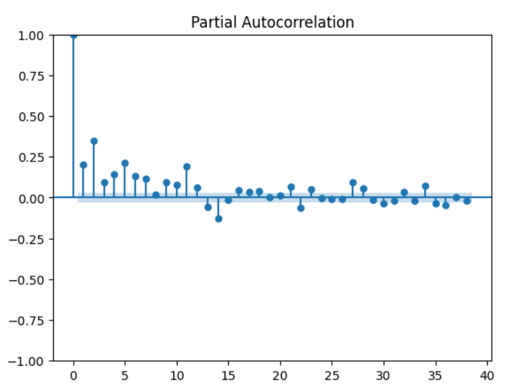
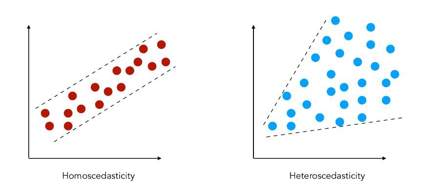
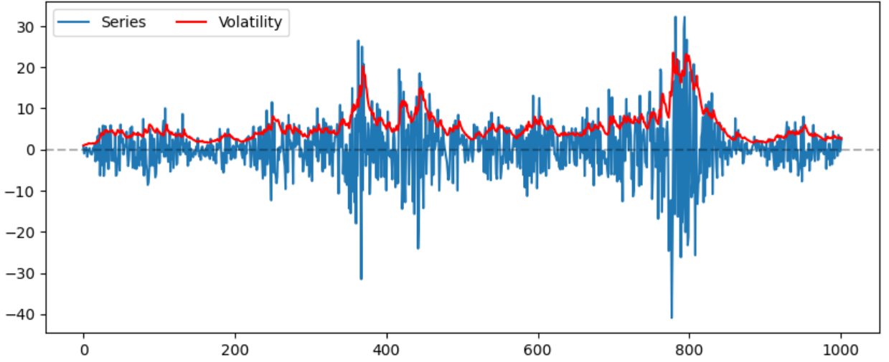
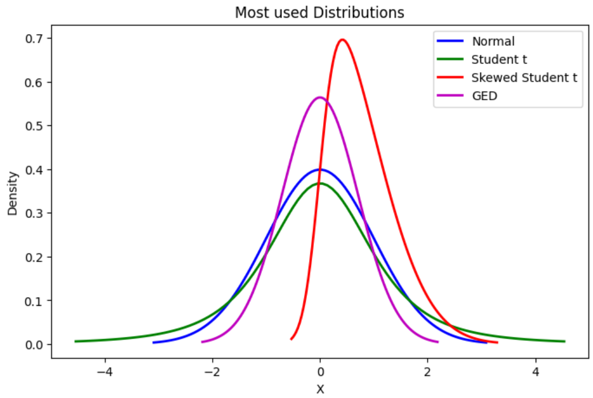
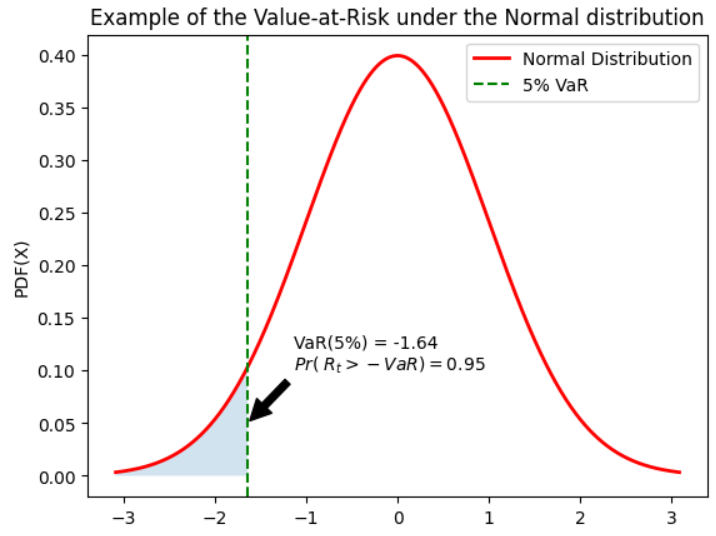
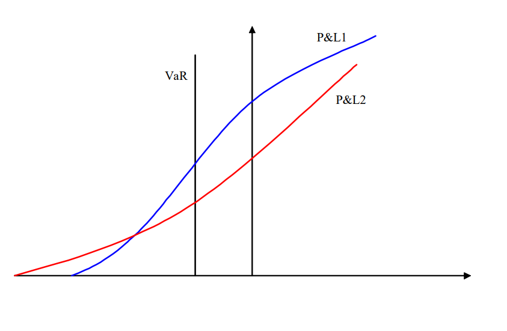
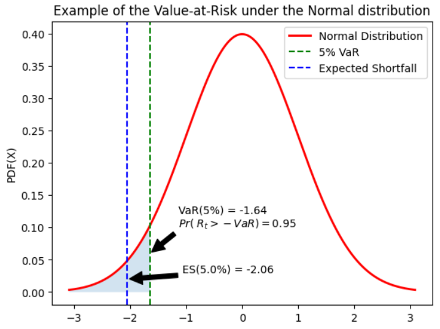

Advanced Volatility Modeling (Lecture Notes)#
Introduction#
Challenges in estimating volatility
Daily volatility is unobserved, and can not be derived from the daily returns \(R_t\) because there is only one observation in a trading day t
Volatility of price returns is not static, It changes frequently for several reasons
Why does volatility change?
News Announcements: Macroeconomic and earnings announcement. As new information arrives, uncertainty rises regarding interpreting it and reshuffling portfolios.
State of Uncertainty: Brexit, Trump election, Covid-19, SVB
Illiquidity: Price movement upon taking directional bets on illiquid assets is high
Volatility Feedback:: Market-Makers behavior, fleeing the order book when volatility increase (when it matters the most)
Leverage:An price declines, companies become more leveraged (debt-to-equity ratio up) and riskier
Volatility Estimates
Realized Volatility, but on what window ?
\[\hat{\sigma} = \sqrt{ \frac{1}{T} \sum_{t=1}^T (r_t - \hat{\mu})}\]Implied volatility the volatility which when input in an option pricing model (such as Black-Scholes) will return the market price of the option. Example: the CBOE Volatility Index (ticker: VIX).
High Frequency Data Estimators. The realized volatility is computed as the sum of squared intraday returns (Andersen and Bollerslev, 1998).
Conditional Volatility issued from dynamic models such as the ARCH and GARCH type models \(\mathbb{E}_t[\sigma_{t+1}^2]\)
How ARCH/GARCH models cover the properties of financial time series? Stylized Facts of Financial Time series
The returns are stationary
Absence of autocorrelations
Heavy tails
Asymmetry
Volatility clustering
Aggregational Gaussianity
ARCH effect
Leverage effect
ARCH Models#
ARCH Models The ARCH model has been introduced by Engle (1982)
ARCH = AutoRegressive Conditional Heteroskedasticity Robert F. Engle Nobel Prize 2003
The squared return follows an autoregressive model.
The term heteroscedasticity. refers to a time-varying variance.
In an ARCH model, it is the conditional variance (and not the variance itself) that changes with time, in a specific way, depending on the available data.
Definition: ARCH Models
ARCH(q) The process \(X_t, t\in \mathbb{Z}\) is said to be an ARCH(q) process, if
where \(Z_t\) is a sequence of independent and identically distributed (i.i.d.) random variables with \(\mathbb{E}(Z_t) = 0\) and \(\mathbb{V}(Z_t) = 1\), and \(\sigma_t\) is a non-negative process such that
with \(\alpha_0>0,~ \alpha_i \in \mathbb{R}, \quad \forall i<P, \alpha_p\in \mathbb{R}^*\) and \(\sum_{i-1}^P {\alpha_{i}} <1\)
Consider an ARCH(1) process
\(\begin{aligned} X_t & = Z_t\sigma_t\\ \sigma_t^2 &= \alpha_0 +\alpha_1X_{t-1}^2 \end{aligned}\)
Then we have
Given the past information \(\underline{X}_{t-1}\), the conditional variance \(\sigma_t^2 = \alpha_0 +\alpha_1X_{t-1}^2\) isdeterministic, since \(x_{t-1}\) is a constant
The process \(Z_t, t\in \mathbb{Z}\) is an i.id noise, so \(\mathbb{V}(Z_t|\underline{X}_{t-1}) = \mathbb{V}(Z_t)\) i.e. there is no memory in \(Z_t\)
The normalization \(\mathbb{V}(Z_t)=1\) is not a restriction: the scaling implied by any other variance would be absorbed by the parameters \(\alpha_0\) and \(\alpha_1\)
Definition: Conditional Variance
The process \(\sigma_t^2\) corresponds to the conditional variance of \(X_t\)
where \(\mathcal{F}_{t-1} \equiv \underline{X}_{t-1} = \{X_{t-1}, X_{t-2}, ... \}\) is the information set available at time \(t-1\)
Some authors denote the conditional variance by \(h_t\), with
\(\begin{aligned} X_t &= Z_t\sqrt{h_t}\\ h_t & = \alpha_0 +\alpha_1X_{t-1}^2 \end{aligned}\)
Key properties of ARCH models#
If \(X_t,~t \in \mathbb{Z}\) has an ARCH(1) representation with Gaussian innovations, then
\(X_t^2\) has an AR(1) representation
\(X_t\) is a martingale difference
\(X_t\) is a stationary process under some conditions on the parameters
\(X_t\) is (unconditionally) Homoscedastic
\(X_t\) is conditionally Heteroscedastic
The (marginal) distribution of \(X_t\) is leptokurtic
The conditional distribution of \(X_t\) is normal
Property 1:
If \(\{ X_t, t\in\mathbb{Z}\}\) has an ARCH(1) representation, with
then \(\{ X_t^2, t\in\mathbb{Z}\}\) has an AR(1) representation, with
where \(\nu_t\) is an innovation process \(\mathbb{E}[\nu_t|\underline{X}_{t-1}] =0\)
Consequences:
\(X_t^2\) and \(X_{t-k}^2\) are correlated \(\Rightarrow\) ARCH effect
\(\rho_k = \mathbb{C}orr(X_t^2, X_{t-k}^2) \neq 0\), especially for small values of k
Property 1: Proof
Consider the following ARCH process
\(\begin{aligned} X_t & = Z_t\sigma_t\\ \sigma_t^2 &= \alpha_0 +\alpha_1X_{t-1}^2 \end{aligned}\)
Add \(X_t^2\) on both sides of the second equation and rearrange, we get
\(\begin{aligned} X_t^2 &= \alpha_0 +\alpha_1X_{t-1}^2 + (X_t^2 - \sigma_t^2)\\ &= \alpha_0 +\alpha_1X_{t-1}^2 + (Z_t^2\sigma_t^2 - \sigma_t^2)\\ & = \alpha_0 +\alpha_1X_{t-1}^2 + \sigma_t^2(Z_t^2 - 1)\\ \end{aligned}\)
\(\nu_t= X_t^2 - \sigma_t^2 = \sigma_t^2(Z_t^2 - 1)\) is an innovation, i.e \(\mathbb{E}[\nu_t|\underline{X}_{t-1}]=0\)
\(\begin{aligned} \mathbb{E}[\nu_t|\underline{X}_{t-1}] &= \mathbb{E}[\sigma_t^2(Z_t^2 - 1)|\underline{X}_{t-1}]\\ &= \sigma_t^2 \mathbb{E}[(Z_t^2 - 1)|\underline{X}_{t-1}]\\ &= \sigma_t^2 ( \mathbb{E}[Z_t^2|\underline{X}_{t-1}]-1)\\ &= \sigma_t^2 (\mathbb{V}(Z_t) - 1) = 0 \end{aligned}\)
The figure below, shows how significant is the autocorrelation of squared returns {width=“.8\textwidth”}
Property 2:
If \(\{ X_t, t\in \mathbb{Z}\}\) is an ARCH(1) process, then it is a martingale difference
Consequences:
The very best (linear or nonlinear) predictor of \(X_t\) based on the available information at time \(t-1\) is simply the trivial predictor, namely the series mean, 0.
This property implies that \(\mathbb{C}ov(X_t,X_{t-k}) =0\quad \forall k \neq 0\), i.e that the process \(X_t\) has no memory
In terms of point forecasting of the series itself, then, the ARCH models offer no advantages over the linear ARMA models.
Property 2: Proof
Consider the following ARCH process
\(\begin{aligned} X_t & = Z_t\sigma_t\\ \sigma_t^2 &= \alpha_0 +\alpha_1X_{t-1}^2 \end{aligned}\)
\(X_t\) is a martingale difference, since
\(\begin{aligned} \mathbb{E}[X_t|\underline{X}_{t-1}] &= \mathbb{E}[Z_t\sigma_t|\underline{X}_{t-1}]\\ &= \sigma_t\mathbb{E}[Z_t|\underline{X}_{t-1}]\\ &= \sigma_t\mathbb{E}[Z_t]\\ &= 0\\ \end{aligned}\)
Since \(Z_t\) is an i.i.d process of mean 0
Innovation |
ARCH model |
Output |
|---|---|---|
\(Z_t\) i.i.d noise |
\(X_t = Z_t\sigma_t\) |
\(X_t\) is martingale |
No correlation |
\(\sigma_t^2 = \alpha_0 +\alpha_1X_{t-1}^2\) |
No correlation between \(X_t\) and \(X_{t-k}\) |
between \(Z_t\) and \(Z_{t-k}\) |
but \(\mathbb{C}ov(X_t^2,X_{t-k}^2) \neq 0\) |
ARCH effect The daily squared returns often exhibit significant correlations. These autocorrelations are often referred to as an ARCH effect.
Absence of autocorrelation: The autocorrelation of asset returns \(R_t\) are often insignificant, except for very small intraday time scales (\(\approx\) 20 minutes) for which microstructure effects come into play.
Property 3:
If \(\{ X_t, t\in \mathbb{Z}\}\) is an ARCH(1) process, then its two first unconditional moments are finite and constant $\(\mathbb{E}[X_t] = 0,\quad\quad \mathbb{V}(X_t) =\frac{\alpha_0}{1-\alpha_1}, \quad\quad \mathbb{C}ov(X_t, X_{t-k}) =0~ \forall k \neq 0\)\( with \)\alpha_0>0\( and \)0 \leq \alpha_1<1$
Consequences: 
An ARCH(1) process is unconditionally homoscedastic. Unconditional Variance
\[\mathbb{V}(X_t) =\frac{\alpha_0}{1-\alpha_1}= cst \quad \forall t\]An ARCH(1) process is conditionally heteroscedastic. Conditional Variance
\[\mathbb{V}(X_t|\mathcal{F}_{t-1}) =\sigma_t^2 = \alpha_0 + \alpha_1 X_{t-1}^2\]varies with \(\mathcal{F}_{t-1}\)
An ARCH(1) process is (weakly) stationary
Property 3: Proof
Consider an ARCH(1) model \(X_t\)
\(\begin{aligned} \mathbb{E}(X_t) &= \mathbb{E}(Z_t\sigma_t)\\ &= \mathbb{E}[\mathbb{E}(Z_t\sigma_t|\underline{X}_{t-1})]\\ &= \mathbb{E}[\sigma_t\mathbb{E}(Z_t|\underline{X}_{t-1})]\\ &= \mathbb{E}[\sigma_t\times 0]\\ &=0\\ \end{aligned}\)
Since \(\mathbb{E}[X_t]=0\), we have \(\mathbb{V}(X_t)=\mathbb{E}[X_t^2]\)
We know that \(X_t^2\) has an AR(1) representation with

Property 4:
If \(\{ X_t, t\in \mathbb{Z}\}\) is an ARCH(1) process with Gaussian innovations \(Z_t \overset{\mathrm{i.i.d}}{\sim} \mathcal{N}(0,1)\), then, its unconditional and conditional Kurtosis coefficients are equal to
Consequences
The return distribution often exhibits heavier tails than those of a normal distribution.
Even if the innovation \(Z_t\) has a normal distribution, the marginal distribution of \(X_t\) is not Gaussian
If the innovation \(Z_t\) has a normal distribution, the conditional distribution of \(X_t\) is Gaussian. \(X_t|\underline{X}_{t-1} \sim \mathcal{N}(0, \sigma_t^2)\)
Property 4: Proof
Consider an ARCH(1) model \(X_t\), we have \(\begin{aligned} \mathbb{E}(X_t^4|\underline{X}_{t-1}) &= \mathbb{E}(Z_t^4 \sigma_t^4|\underline{X}_{t-1})\\ &= \mathbb{E}(Z_t^4|\underline{X}_{t-1}) \sigma_t^4\\ &= \mathbb{E}(Z_t^4) (\sigma_t^2)^2\\ \end{aligned}\)
\(Z_t \overset{\mathrm{i.i.d}}{\sim} \mathcal{N}(0,1)\), so \(\mathbb{E}(Z_t^4) = 3\). We get
The conditional distribution is mesokurtic
\(\begin{aligned} \mathbb{E}[X_t^4] &= \mathbb{E}(\mathbb{E}(X_t^4|\underline{X}_{t-1}))\\ &= 3\mathbb{E}( (\alpha_0 +\alpha_1X_{t-1}^2)^2 )\\ &= 3\left( \alpha_0^2 + 2\alpha_0\alpha_1\mathbb{E}(X_{t-1}^2) +\alpha_1^2\mathbb{E}(X_{t-1}^4) \right) \\ &= 3\left( \alpha_0^2 + \frac{2\alpha_0^2\alpha_1}{1-\alpha_1} +\alpha_1^2\mathbb{E}(X_{t-1}^4) \right) \\ &= 3\alpha_0^2 \left(\frac{1+\alpha_1}{1-\alpha_1} \right) + 3\alpha_1^2\mathbb{E}(X_{t-1}^4) \end{aligned}\)
\(X_t\) is stationary, then \(\mathbb{E}[X_t^4] =\mathbb{E}[X_{t-1}^4]\), and we know \(\mathbb{V}(X_t) = \frac{\alpha_0}{(1-\alpha_1)}\). Thus,
The Kurtosis is finite and positive as soon as \(\alpha_1^2<1/3\).
Moreover, the conditional distribution is leptokurtic.
ARCH models Properties Summary if \(X_t, ~t\in \mathbb{Z}\) is an ARCH(1) process with Gaussian innovation, then
Property |
Consequences / Interpretation |
|
|---|---|---|
P1 |
\(X_t^2\) is an AR(1) process |
ARCH effect: \(\mathbb{C}ov(X_t^2, X_{t-k}^2) \neq 0\) for “small” k |
P2 |
\(X_t\) is a martingale difference |
\(\mathbb{E}[X-t/X_{t-1}]=0\) and \(\mathbb{C}ov(X_t, X_{t-k}) =0 \quad \forall k\neq 0\) |
P3 |
\(\mathbb{E}[X_t] =0\), |
\(\{X_t\}\) is stationary, |
P4 |
\(\mathbb{K}[X_t]>3\), |
The ARCH model generates leptokurtosis, |
ARCH(1) models fits most of the stylized facts of financial series The properties of the ARCH(1) allow to capture most of the stylized facts of financial data
The returns are stationary \(\Rightarrow {X_t}\) is stationary
Absence of autocorrelations \(\Rightarrow {X_t}\) is a martingale difference
Heavy tails \(\Rightarrow {\mathbb{K}(X_t)}\) may be larger than 3 given the value of \(\alpha_1\)
Asymmetry
Volatility clustering \(\Rightarrow {\mathbb{C}ov(X_t^2, X_{t-k}^2) \neq 0}\)
Aggregational Gaussianity \(\Rightarrow\) The marginal distribution of \(X_t\) is not normal
ARCH effect \(\Rightarrow {X_t}^2\) has an AR(1) representation and \({\mathbb{C}ov(X_t^2, X_{t-k}^2) \neq 0}\)
Leverage effect
Build an ARCH model for non-zero mean series:#
Building an ARCH model Denote by \(R_t\) the daily return of an asset or a portfolio at time t.
follows the structure of a (conditional) volatility model
where \(\theta\) denotes the set of parameters for the conditional mean and variance and \(\mu_t\) is typically an ARMA-type model .
Example ARMA(1,1)-ARCH(1)
The process \(\{R_t, ~t\in\mathbb{Z}\}\) has an ARMA(1,1)-ARCH(1) representation if
where \(Z_t\) is a sequence of i.i.d. variables with \(\mathbb{E}(Z_t)=0\) and \(\mathbb{V}(Z_t)=1\).
We have:
and \(\theta = (\phi_0, \phi_1, \theta_1, \alpha_0, \alpha_1)'\) is the vector of parameters to estimate
Model Checking#
For an ARCH model, the standardized innovations \(Z_t = \frac{\epsilon_t}{\sigma_t}\) are i.i.d. random variates (following for example a standard normal or Student-t distribution).
Therefore, one can check the adequacy of a fitted ARCH model by examining the series of standardized residuals
\[\hat{Z_t} = \frac{\hat{\epsilon_t}}{\hat{\sigma_t}}\]The skewness, kurtosis, and QQ-plot of \(\hat{z_t}\) can be used to check the validity of the distribution assumption on \(Z_t\).
Kolmogorov-Smirnov test on \(\hat{z}_t\)
Caution
We have to distinguish between:
The forecasts on the series \(R_t\) itself (typically the returns).
The forecasts on the volatility (or the variance) of \(R_t\).
Forecasting of the series \(R_t\) The best linear forecast of \(R_t\) given the information set \(\mathcal{F}_{t-1}\) will be no different with or without an ARCH error
Weaknesses of ARCH Models#
It requires a large order (q) to calibrate the model on financial data
The model assumes positive and negative shocks have the same effects on volatility because it depends on the square of the previous shocks.
The ARCH model provides no insight into understanding the source of volatility. It only provides a mechanical way to describe the behavior of the conditional variance.
The ARCH model is rather restrictive. For instance, the fourth moment \(\mathbb{E}(X_t^4)\) exists only if \(\alpha_1^2< \frac{1}{3}\)
GARCH Models#
Due to the large persistence in volatility, ARCH models often require a large p to fit the data. A more parsimonious specification is provided by GARCH models.
GARCH = Generalized AutoRegressive Conditional Heteroskedasticity\ Bollerslev, T. (1986)
Definition: GARCH Model
The stochastic process \(\{ \epsilon_t, \ t \in \mathbb{Z} \}\) is said to be a GARCH(p,q) process if:
where \(Z_t\) is a sequence of i.i.d variables with \(\mathbb{E}(Z_t) = 0\) and \(\mathbb{V}(Z_t) = 1\), and \(\sigma_t\) is a non-negative process such that:
with \(\omega >0\), \(\forall \ i, (\alpha_i, \beta_i) \ \in \ \mathbb{R}^{+,2}\) and \(\sum^p_{i=1} \alpha_i + \sum^p_{i=1} \beta_i <1\)
The conditional variance of a GARCH(p, q) depends on:
The first p lag of the \(\epsilon_t^2\) (e.g. the squared error terms)
The first \(q\) lag of the conditional variance \(\sigma^2\)
The parameters \(\alpha_i\) are often called the ARCH parameters
The parameters \(\beta_i\) are often called the GARCH parameters
Tip
GARCH(1,1) specifications are generally sufficient to capture the dynamics of the conditional variance of financial time series
“A forecast comparison of volatility models: does anything beat a GARCH (1, 1)?.” Hansen, Peter R., and Asger Lunde. (2005)
Special Case: GARCH(1, 1) The process \(\{ \epsilon_t, \ t \in \mathbb{Z} \}\) is said to be a GARCH(1,1) if:
where \(Z_t\) is a sequence of i.i.d variables with \(\mathbb{E}(Z_t) = 0\) and \(\mathbb{V}(Z_t) = 1\), and \(\sigma_t\) is a non-negative process such that:
with \(\omega >0\), \(\alpha \geq 0, \beta \geq 0\) and \(\alpha + \beta <1\)
Conditional Variance Persistences#
The conditional variance \(\sigma_t^2 = \omega + \alpha \epsilon^2_{t-1} + \beta \sigma^2_{t-1}\) depends on two effects:
An intrinsic persistence effect through the first lag of the conditional variance
An extrinsic persistence effect
Following a positive (or negative) shock at time t-1, the conditional variance at time t increases (impact effect) and thus it has an impact on \(\epsilon_t = Z_t \sigma_t\)
\[\text{shock} \ z_{t-1} \ > \ 0 \Rightarrow \ \epsilon_{t-1} \ \uparrow \ \Rightarrow \ \sigma_t \ \uparrow \ \dots\]Starting from the next period (at time \(t\)), the effect of the shock at \(t-1\) on the conditional variance at \(t+1\) passes through the conditional variance at time \(t\) (intrinsic persistence)
\[... \ \Rightarrow \ \sigma_t \ \uparrow \ \Rightarrow \ \sigma^2_{t+1} \ \uparrow\]The overall effect of a shock can be decomposed into a contemporaneous effect, which depends on \(\alpha\) and a persistence effect that depends on \(\beta\)
Remarks: It is often the case that: - The sum of the estimates of \(\alpha\) and \(\beta\) are generally close, but below, 1 - The estimate of \(\beta\) is generally greater than the one of \(\alpha\) - The estimate of \(\beta\) is generally larger than 0.90 for daily returns and the estimate of \(\alpha\) is below 0.1 - Be careful: it is not a general rule, just an observation.
GARCH Properties#
GARCH process properties are similar to those of an ARCH process.
ARCH properties
\(\epsilon_t^2\) has an ARMA representation
ARMA representation
If \(\{ \epsilon_t, \ t \in \mathbb{Z} \}\) has a GARCH(p,q) representation with:
the \(\{ \epsilon_t^2, \ t \in \mathbb{Z} \}\) has a ARMA(max(p,q), q) representation with:
with \(\nu = \epsilon^2_t - \sigma^2_t\) is an innovation process, i.e \(\mathbb{E}(\nu_t|\mathcal{F}_{t-1})\)
The most often used distributions for \(Z_t\) are:#
Normal distribution, \(Z_t \overset{\mathrm{i.i.d}}{\sim} \mathcal{N}(0,1)\). IMPORTANT: the normality assumption on \(Z_t\) does not imply that the return \(R_t\) has a normal (marginal) distribution.
Student t-distribution, \(Z_t \overset{\mathrm{i.i.d}}{\sim} t(\nu)\) , which is symmetric and leptokurtic (if \(\nu\) is “small”).
Skewed Student t-distribution \(Z_t \overset{\mathrm{i.i.d}}{\sim} Skewed~t(\delta,\nu)\), which is asymmetric (if \(\delta \neq 1\)) and leptokurtic (if \(\nu\) is “small”).
Generalized Error Distribution (GED) \(Z_t \overset{\mathrm{i.i.d}}{\sim} GED(\nu)\), which is symmetric and leptokurtic (if \(\nu\) < 2).
{width=“.9\textwidth”}
Why consider non-Gaussian distributions for the innovation \(Z_t\) ?
The use of a leptokurtic distribution for \(Z_t\) allows to increase the kurtosis of \(R_t\).
\[\begin{split}\begin{aligned} \text{Kurtosis of a GARCH process} &= \text{kurtosis generated by the model} \\ &+ \text{ kurtosis of the innovation } Z_t \end{aligned}\end{split}\]The kurtosis generated by the model dynamic is generally not sufficient to reproduce the level of kurtosis observed in the financial returns.
The use of a skewed distribution for \(Z_t\) allows to reproduce the skewness observed in the distribution of the financial returns.
\[\text{Skewed distribution for }Z_t \Rightarrow \text{Skewed distribution for }R_t\]
GARCH Extensions#
Asymmetric GARCH models
The GARCH model assumes that positive and negative shocks have the same effects on volatility because it depends on the square of the previous shocks.
In practice, the return of a financial asset responds differently to positive and negative shocks.
The GARCH model does not allow to capture the leverage effect.
As asset prices decline, companies become more leveraged (debt-to-equity ratios increase) and riskier, and hence their stock prices become more volatile. When stock prices become more volatile, investors demand high returns, and hence stock prices go down.
Many asymmetric GARCH models have been proposed: GJR-GARCH, TGARCH, EGARCH, APARCH, VSGARCH, QGARCH, LSTGARCH, ANSTGARCH, etc.
GJR-GARCH#
One of the most often used asymmetric models is the GJR-GARCH model, where “GJR” stands for Glosten, Jagannathan, and Runkle (1993).
Definition
The process \(\{\epsilon_t, t \in \mathbb{Z}\}\) is to be a GJR-GARCH(1,1) process, if
where \(Z_t\) is i.i.d with \(\mathbb{E}(Z_t) = 0\) and \(\mathbb{V}(Z_t)=1\), and
with \(w>0, \quad \alpha>0, \quad \beta>0, \quad \gamma \in \mathbb{R}\) and where \(\mathbb{I}_{(.)}\) is the indicator function that takes a value 1 if the condition is true and 0 otherwise.
Interpretation:
The term \(\epsilon_t\) can be interpreted as a shock (surprise) on the return, since
\[\epsilon_t = R_t - \mu_t = R_t - \mathbb{E}(R_t|\mathcal{F}_{t-1})\]In a GJR-GARCH model, the influence of the past return shock \(\epsilon_t\) on the current conditional variance \(\sigma_t^2\) depends on its sign
\[\sigma_t^2 = w+\alpha\epsilon_{t-1}^2 + \gamma \mathbb{I}_{(\epsilon_{t-1}>0)}\epsilon_{t-1}^2 + \beta \sigma_{t-1}^2\]\[\begin{split}\frac{\partial\sigma_t^2}{\partial\epsilon_{t-1}^2} = \left\{ \begin{matrix} \alpha + \gamma & if \epsilon_{t-1} <0\\ \alpha & otherwise \end{matrix} \right\}.\end{split}\]A **leverage effect implies that \(\gamma > 0\), i.e. the increase in volatility caused by a negative return is larger than the appreciation due a positive return of the same magnitude.
TGARCH model#
TGARCH, introduced by Zakoian (1994), where “T” stands for Threshold, is an asymmetric GARCH model designed to capture the leverage effect. TGARCH is similar to the GJR model, different only because of the use of the conditional volatility, instead of the variance, in the specification.
Definition
The process \(\{\epsilon_t, t \in \mathbb{Z}\}\) is to be a TGARCH(1,1) process, if
where \(Z_t\) is i.i.d with \(\mathbb{E}(Z_t) = 0\) and \(\mathbb{V}(Z_t)=1\), and
with \((w,\alpha_{+},\alpha_{-}, \beta) \in \mathbb{R}^4\) and \(\mathbb{I}_{(.)}\) is the indicator function
Interpretation:
One advantage of the TGARCH is that it does not require any positivity constraints on the parameters, since we have \(\forall (w,\alpha_{+},\alpha_{-}, \beta) \in \mathbb{R}^4\)
\[\sigma_t = \left( w+\alpha_{+}\epsilon_{t-1}\mathbb{I}_{(\epsilon_{t-1}>0)}+\alpha_{-}\epsilon_{t-1}\mathbb{I}_{(\epsilon_{t-1}<0)} + \beta\sqrt{\sigma_{t-1}^2} \right) \geq 0\]The TGARCH allows to capture an asymmetry between positive and negative shocks, as
\[\begin{split}\frac{\partial\sigma_t}{\partial\epsilon_{t-1}} = \left\{ \begin{matrix} \alpha_{-} & if \epsilon_{t-1} <0\\ \alpha_{+} & otherwise \end{matrix} \right\}.\end{split}\]The leverage effect implies that \(|\alpha_{-} > \alpha_{+}|\), i.e. the increase in volatility caused by a negative return is larger than the appreciation due to a positive return of the same magnitude
EGARCH model#
The EGARCH has been introduced by Nelson (1991). “E” stands for Exponential. It was designed to capture both (1) the asymmetric effects and (2) the effects of “big” shocks.
Definition
The process \(\{\epsilon_t, t \in \mathbb{Z}\}\) is to be a EGARCH(1,1) process, if $\(\epsilon_t = Z_t\sigma_t\)$
with \((w,\alpha,\beta, \gamma) \in \mathbb{R}^4\) and where \(Z_t\) is i.i.d with \(\mathbb{E}(Z_t) = 0\) and \(\mathbb{V}(Z_t)=1\),
Interpretation:
The term \(\left(|Z_{t-1}| - \mathbb{E}(|Z_{t-1}|)\right)\) measures the magnitude of the (positive or negative) shock
If the parameter \(\gamma\) is positive, the “big” (compared to their expected value) shocks have a stronger impact on the variance than the “small” shocks
The EGARCH model captures the asymmetric effects between positive and negative shocks on the returns, since
\[\begin{split}\frac{\partial\sigma_t}{\partial\epsilon_{t-1}} = \left\{ \begin{matrix} \gamma - \alpha & if z_{t-1} <0\\ \gamma + \alpha & otherwise \end{matrix} \right\}.\end{split}\]The leverage effect, i.e. the fact that negative shocks at time \(t -1\) have a stronger impact on the variance at time t than positive shocks, implies that \(\alpha <0\)
Daily returns with EGARCH model
Consider AR(1)-EGARCH(1,1) with Gaussian innovation for the returns \(\{\mathbb{R}_t, t\in\mathbb{Z}\}\)
or equivalently
with \(Z_t\) i.i.d \(\mathcal{N}(0,1)\). The vector of parameters to be estimated is \(\theta = (\phi_0, \phi_1, w, \alpha, \gamma, \beta)'\)
Value At Risk#
VaR: Intuitive Definition
The value at risk (VaR) defined for a hedge ratio \(\alpha\) % corresponds to the quantile of order \(\alpha\) of the distribution of profits and losses (P&L) associated with the holding of an asset or a portfolio of assets over a given period.
Remark: VaR is generally negative (a loss) in a P&L representation. For simplifying, we denote the VaR as a positive value by considering the opposite of the quantile
{width=“.5”, height=“0.5”}
VaR: Formal Definition
For a hedge rate of \(\alpha\)%, the Value-at-Risk, noted \(VaR_t (\alpha)\), corresponds to the opposite of the fractile of order \(\alpha\) of the distribution of profits and losses (P&L)
where \(F_{R_t}\) denotes the cumulative distribution function associated with the density function \(f_{R_t}(.)\)
Sometimes the Value-at-Risk is expressed as a function of confidence level. VaR at hedge rate 1% will be Var(99%) $\(VaR(1-\alpha) = -F_{R_t}^{-1}(\alpha)\)$
the probability of observing a loss greater than the VaR over the holding period is equal by definition to the coverage rate: $\(Pr[R_t>-VaR_t(\alpha)] = \int_{-\infty}^{-VaR_t(\alpha)}{f_{R_t}(r) dr} = \alpha\)$
Conditional Value-at-Risk#
We define the conditional distribution of P&L, based on a set of information available at time t, denoted as \(\Omega_t\)
\[f_{R_t}(r|\Omega_t)\]the conditional distribution may change through time, but we usually consider the case of invariant conditional density (given the explanatory variables)
\[F_{R_t}(r|\Omega) = F_{R}(r|\Omega) \quad \forall t\]
Definition
For a hedge rate of \(\alpha\)%, the conditional Value-at-Risk to a set of information \(\Omega_t\), noted \(VaR_t (\alpha|\Omega_t)\), equals to the opposite of the fractile of order \(\alpha\) of the P&L conditional distribution
where \(F_{R_t}(r|\Omega_t)\) is the cumulative distribution function associated with the conditional density function \(f_{R_t}(r|\Omega_t))\)
VaR: Specification The definition of Value-at-Risk is based on 3 elements:
The distribution of profit and loss (P&L) of the portfolio or the asset
Level of confidence (or equivalently the hedge rate \(\alpha\))
The holding period of the asset (or the risk horizon)
Estimation methods#
Challenge
Theoretically, at each date t, the return \(R_t\) is a random variable admitting a distribution \(f_{R_t}(.)\) and a fractile \(\alpha\). However, we have only one observation \(r_t\) of this distribution. From this single realization, without any additional hypothesis, it is impossible to estimate the quantiles of the distribution \(f_{R_t}(.)\) at date t, i.e. the VaR
Several estimation methods have been proposed
Non-parametric Estimation: No parametric distribution of P&L is imposed a priori. Historical Simulation(HS), Weighted HS, Filtered HS
Semi-parametric Estimation: CAViaR method, Extreme Values Theory
Parametric Estimation: ARCH, GARCH, RiskMetrics
Non-Parametric Estimation:#
Historical Simulation: VaR is estimated as the empirical fractile of past returns.
In the HS approach, we explicitly make 2 strong hypothesis
the non-conditional distribution of returns is the same \(\forall~t\)
\[f_{R_t}(w) = f_{R}(w)\]Consequently, the fractiles of this non-conditional distribution is also the same
\[VaR_t(\alpha) = VaR(\alpha)\]Returns \(\{R_1, R_2, ..,R_T\}\) are independent \(\Rightarrow\) VaR estimated by HS are unconditional, relatively invariant to changes in the economic environment
To introduce a minimum conditioning, we can compute the Var on a rolling window, by deleting very ancient observations. However, the Window size becomes key: too small and the estimator is volatile, too large and the estimator is invariant
Bootstrapped Historical Simulation: The BHS estimator of the VaR corresponds to the empirical average of VaR computed by Historical Simulations, obtained from S samples of bootstrapped returns
Non-parametric Kernel based estimate of the density function
One major drawback of kernel estimators, is that they present edge effects. Their precision is low on the “edges” of the sample, precisely where we want to estimate the VaR
Weighted Historical Simulation or Hybrid Method: It consist on applying the historical simulation method while assigning different weights to the observations. The most common estimates are
the Aged-weighted HS: it gives more weights to the recent observations
the Volatility-weighted HS: it gives more weights to hight volatile periods, where the tails are atteined more often
Semi-Parametric Estimation#
Quantile Regression and CAViaR: Instead of modeling the distribution function of returns in the perspective of calculating its quantiles. Why not model the quantiles directly ?
CAViaR for Conditional Autoregressive Value at Risk, by Engle and Manganelli, implement exactly that, by specifying an autoregressive dynamic for conditional quantiles
CAViaR
CAViaR is a model specifed on the fractile. The conditional VaR at hedge rate \(\alpha\) is given by
where \(\beta_i \in\mathbb{R}\)
Parametric Estimation#
For any elliptical distribution, the VaR forecast is a linear transformation of the variance (volatility) forecast. Predicting the variance allows to predict the VaR
GARCH Model Under the normal distribution hypothesis of conditional P&L, the VaR forecast for hedge rate \(\alpha\) is given by
where \(h_{t+1}\) is the conditional variance of returns derived from the GARCH model
Special case: RiskMetrics
RiskMetrics Developed by JP Morgan in the 90s. The forecasted conditional VaR for the hedge rate \(\alpha\) is
where \(\mu\) is the expected return and \(h_t\) is the conditional variance
where \(\lambda\) is a decay parameter (generally fixed to 0.97)
The conditional variance in RiskMetrics follows a EWMA (Exponential Weighted Moving Average) type process: The forecasted variance is a linear function of past innovations and past variance
RiskMetricss is a special case of GARCH
Limites of the Value-at-Risk#
The Value-at-Risk, as a risk metric, present several limitation
This risk measure does not give any information on losses beyond the VaR
This measure can lead some agents to voluntarily take more risk in a decentralized risk management system
It can lead to a decision maker to choose a project with exorbitantly large losses, as long as these losses do not affect the VaR (because they occur with low probability)
the VaR is not a coherent measure of risk because the sub-additivity property is not respected $\(\rho(X+Y) \leq \rho(X) + \rho(Y)\)$

An alternative coherent metric for risk is the Expected Shortfall (ES)
Expected Shortfall
ES: Expected shortfall The Expected shortfall (ES) associated with a hedge rate \(\alpha\) is the average of the \(\alpha\)% worst expected losses
where \(F_{R_t}\) is the cumulative distribution of the density function \(f_{R_t}(r)\)
Interpretation: The ES gives average loss in the worst case scenario. i.e in the \(\alpha\)% situations where the losses exceed the Var
Remark : The Expected Shortfall is sometimes denoted the Conditional Loss or Expected Tail Loss
